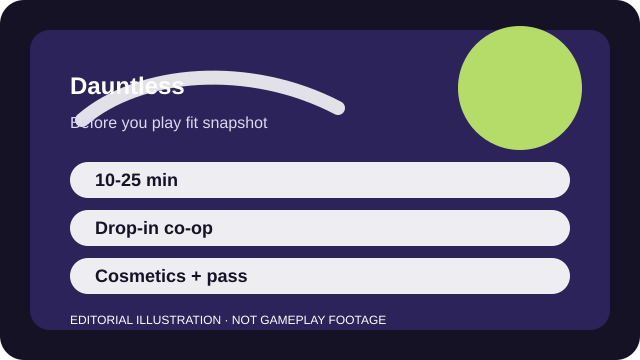

BEFORE YOU PLAY
What this page is and is not
This is a sourced editorial fit profile. It is designed to help with a yes-or-no play decision, and it does not claim a scored hands-on review.
The fit is clear fast because the hunt loop is easy to understand. The real question is whether repeating that loop feels satisfying enough without a more sprawling RPG shell around it.
The first-session loop to judge is simple: Hunt a behemoth, learn its tells, craft upgrades, and repeat with different weapons or targets.
Behemoth hunts, weapon paths, and crafted gear form a clean repeatable loop.

FIT SNAPSHOT
Dauntless at a glance
| Genre | Cooperative action RPG |
|---|---|
| Platforms | PC, PlayStation, Xbox, Switch |
| Business model | Free-to-play boss-hunt game with cosmetic and pass-based monetization. |
| Typical session | 10-25 minute hunts that are easy to schedule with friends. |
| Play style | repeatable co-op boss hunts |
| Learning barrier | Dauntless is easy to understand at the hunt level, though weapon mastery and progression choices still take time. |
| Social shape | The game is comfortable solo or in drop-in co-op, which lowers the scheduling pressure. |
WHO IT FITS
Best fit, likely friction, and the social reality
players who want approachable co-op hunts without Monster Hunter's heavier upfront complexity
players who need huge encounter variety or deep long-term worldbuilding
The game is comfortable solo or in drop-in co-op, which lowers the scheduling pressure.
Behemoth hunts, weapon paths, and crafted gear form a clean repeatable loop.
FIRST SESSION PLAN
How to test the fit in one evening
- Test two weapon types before investing emotionally in one style.
- Learn one behemoth tell at a time instead of reading every effect in one sitting.
- Use early hunts to practice survival and parts, not speedrunning.
- Keep social expectations casual until everyone understands revives and upgrade pacing.
Use the first session to answer these fit questions instead of judging rank, win rate, or store value immediately.
- Do you want co-op boss hunts without a giant rulebook up front?
- Is repetition a positive because it creates mastery, or a warning sign for your taste?
- Would you rather schedule 15-minute hunts than 90-minute raids?
TIME, COST, AND COMMITMENT
What you are really signing up for
| Session budget | 10-25 minute hunts that are easy to schedule with friends. |
|---|---|
| Social demand | The game is comfortable solo or in drop-in co-op, which lowers the scheduling pressure. |
| Progression shape | Behemoth hunts, weapon paths, and crafted gear form a clean repeatable loop. |
| Spending pressure | Core access is free. Cosmetics and seasonal extras are the main monetized layers. |
Sessions are neat and short, but long-term retention depends on whether you enjoy farming the same core activity.
Core access is free. Cosmetics and seasonal extras are the main monetized layers.
SOURCES AND LIMITS
What was checked, and what can change
- Event cadence and pass rewards can change how much short-term novelty the game offers.
- Weapon or gear balance can alter which options feel welcoming to beginners.
- Platform-support features such as account linking should be rechecked on live official pages.
This profile uses official game pages and defensible general product knowledge to frame the player fit. It does not claim live testing across every platform, accessibility need, or current event rotation.